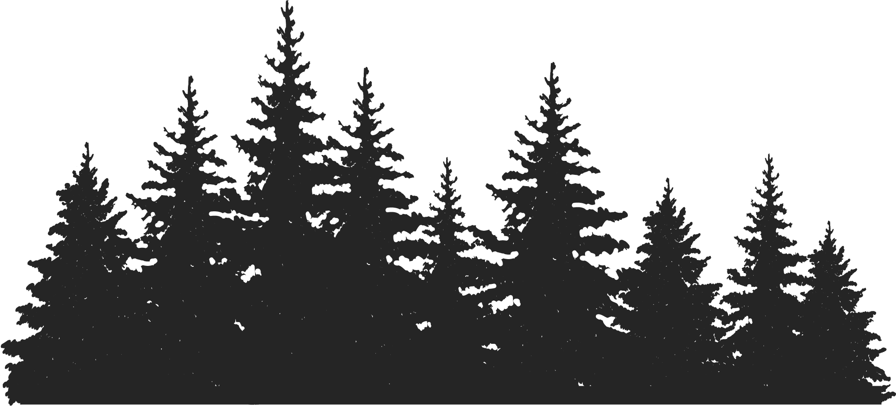

Environmental Scanner

Iris detects what you're looking at and summarizes the environmental impact of any action you may take, analyzing carbon footprint, source, and sustainability.
With expanding technologies like smart glasses, the way humans understand and interact with the world will shift. With Iris, we ensure that environmental awareness remains integral throughout this change, and even grows alongside.
Look at the objects in your environment, and read the environmental summary! Click the space key to continue scanning.
Start Scanning